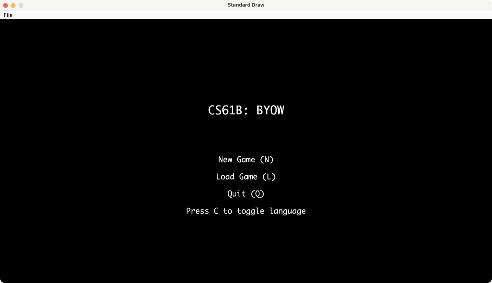
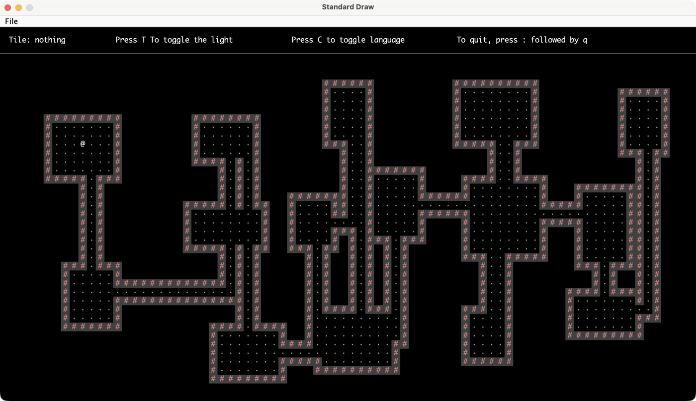
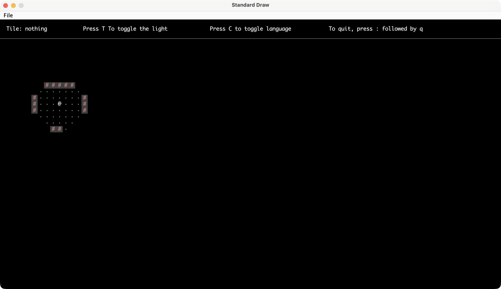

Build Your
Own World.
A procedurally-generated 2D dungeon explorer written from scratch in Java — custom tile-rendering engine, seeded world generation, fog-of-war, and save/load persistence.
Overview
BYOW is Project 5 of UC Berkeley's CS61B (Data Structures), built with a partner (group g20). The goal: design and implement your own interactive world from the ground up — no game engine, no rendering library beyond a bare-bones tile drawer. Everything from the dungeon layout algorithm to the HUD to save/load persistence is hand-written.
Every world is generated from a random seed: the same seed always reproduces the exact same layout of rooms, hallways, and starting position, which made the generation logic testable and let us debug specific "unlucky" seeds that produced disconnected or degenerate maps.
What it does
- Procedural dungeon generation — a seeded RNG places a random number of rectangular rooms, then carves L-shaped hallways to connect every room into a single traversable graph.
- Real-time game loop — polls keyboard input every frame (WASD to move) and re-renders only what's changed, following the same input/update/render loop structure taught in the course's demo classes.
- Fog-of-war lighting — tiles outside a radius around the avatar (or not in line-of-sight) are hidden, toggled on/off with a keypress; see the two screenshots below of the same dungeon lit vs. dark.
- Save & load — serializes the world's seed, avatar position, and state to disk so a session can be resumed later.
- English / Spanish HUD — the whole heads-up display can be toggled between languages on the fly.
Gameplay demo
A real recording of the game running — seed entry, world generation, moving around with fog-of-war on, toggling full lighting, and the click-to-path indicator tracing a route to a clicked tile.
Screenshots



Berkeley-CS61B-Student GitHub
org (course policy for academic-integrity reasons), so the link above will 404 for
anyone without course access — it's kept here as the canonical source location.